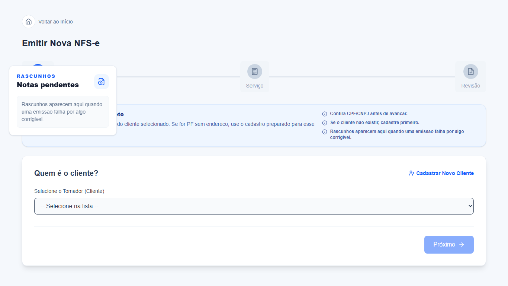
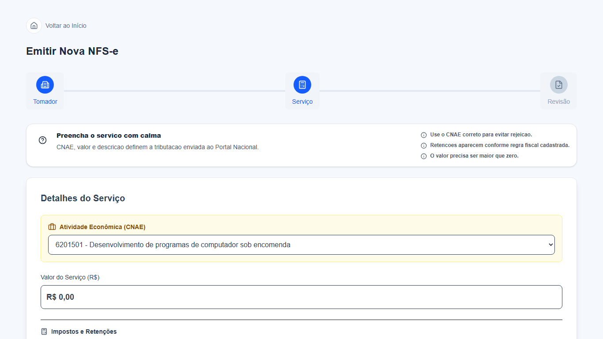
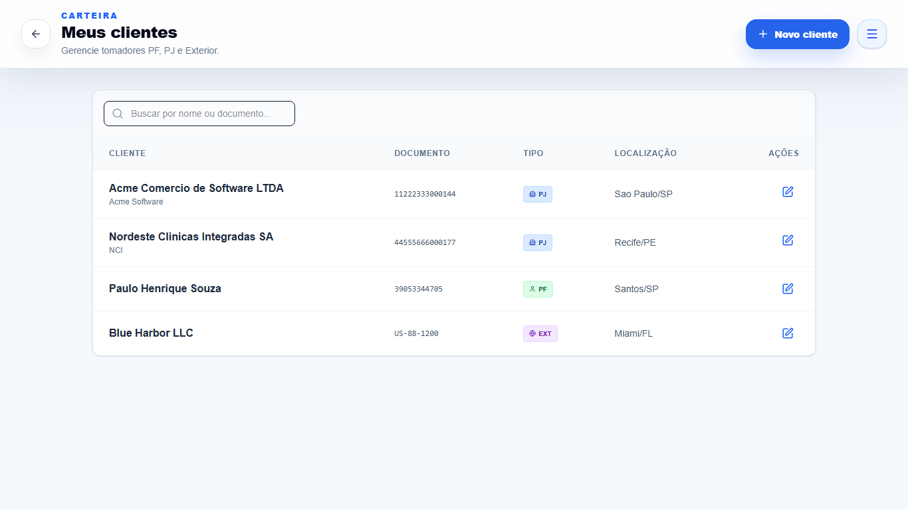
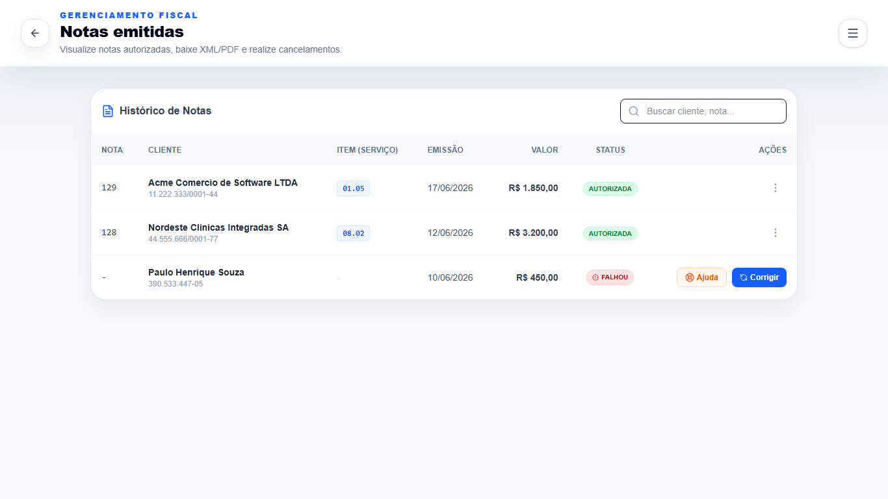
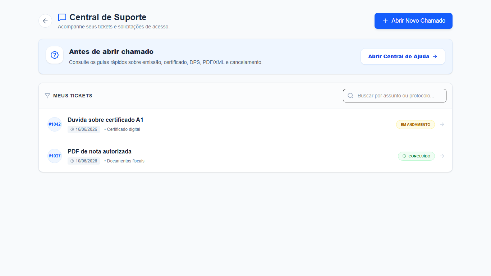
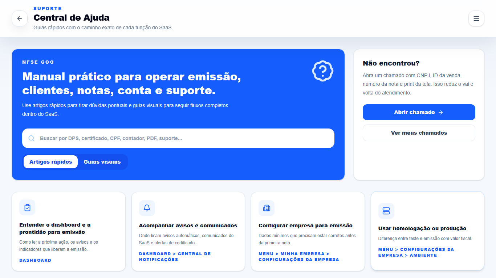
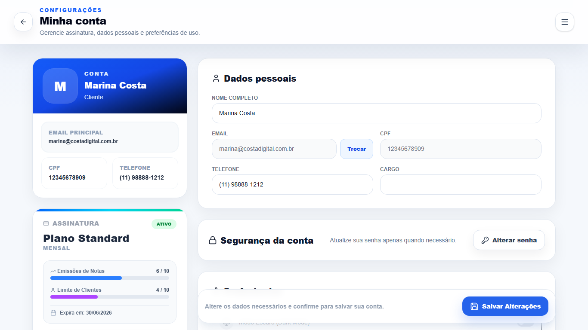

1
Contratar
Planos, adicionais, cupom e solicitacao de ativacao em uma tela comercial simples.
A experiencia web organiza contratacao, prontidao fiscal, carteira de clientes, emissao guiada, historico, relatorios e suporte em uma jornada clara para o cliente.
Em vez de telas soltas, o SaaS conduz o cliente da configuracao fiscal ate o acompanhamento de notas, relatorios e suporte, com contexto em cada etapa.
Planos, adicionais, cupom e solicitacao de ativacao em uma tela comercial simples.
Empresa, certificado A1, IBGE, CNAEs, ambiente e tomadores antes da primeira nota.
Assistente em etapas para selecionar tomador, servico, valores e revisar dados.
Historico com status, correcao, ajuda, cancelamento, PDF, XML e suporte.
Os prints abaixo sao da interface web local do NFSe Goo, capturados com dados demonstrativos para apresentar o fluxo sem expor dados reais.
A versao web combina orientacao fiscal e acoes objetivas para reduzir rejeicoes, retrabalho e tickets desnecessarios.
Dashboard mostra se cadastro, certificado, IBGE e ambiente estao prontos.

O assistente comeca pela escolha do cliente e pelos rascunhos recuperaveis.

CNAE, valor, descricao e retencoes ficam concentrados na etapa certa.
Cada modulo resolve uma parte da operacao: vendas, cadastro, documentos, relatorios, suporte, ajuda e administracao da conta.

Tomadores PF, PJ e exterior com busca, edicao e dados fiscais reutilizaveis.

Status, PDF, XML, cancelamento, ajuda e correcao ficam no mesmo contexto.
Fechamento por periodo com totais, prestador, filtros e exportacao fiscal.

Tickets, status, busca e atalhos para central de ajuda antes do atendimento.

Guias sobre emissao, certificado, configuracao, cancelamento e conta.

Dados pessoais, limites do plano, seguranca, preferencias e salvamento.
Esta versao segue o mesmo padrao da apresentacao mobile: HTML, CSS e JavaScript puro, sem dependencias externas. Depois pode ser convertida em uma pagina Next.js, mantendo as secoes e trocando os prints quando o ambiente final estiver pronto.